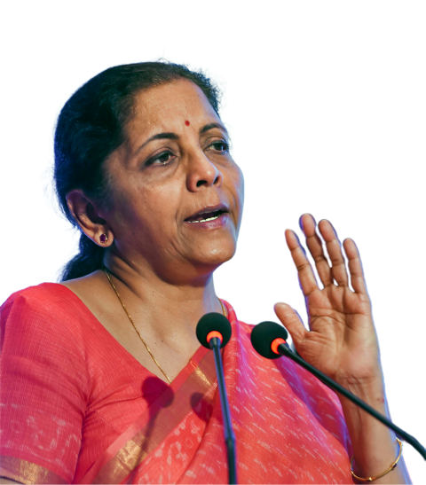

Nirmala Sitharaman
Minister of Finance of India
Obviously, defence is very sensitive and very challenging ministry.
Nirmala Sitharaman
Biography

Nirmala Sitharaman in 2023
Minister of Finance
Incumbent
Assumed office
30 May 2019
Prime Minister Narendra Modi
Preceded by Arun Jaitley
Minister of Corporate Affairs
Incumbent
Assumed office
30 May 2019
Prime Minister Narendra Modi
Preceded by Arun Jaitley
Minister of Defence
In office
3 September 2017 – 30 May 2019
Prime Minister Narendra Modi
Preceded by Arun Jaitley
Succeeded by Rajnath Singh
Minister of State (Independent Charge) for Ministry of Commerce and Industry
In office
26 May 2014 – 3 September 2017
Prime Minister Narendra Modi
Preceded by Anand Sharma
Succeeded by Suresh Prabhu
Minister of State for Finance and Corporate Affairs
In office
26 May 2014 – 9 November 2014
Prime Minister Narendra Modi
Preceded by Shripad Naik (Finance)
Office established (Corporate Affairs)
Succeeded by Jayant Sinha (Finance)
Arjun Ram Meghwal (Corporate Affairs)
Member of the Rajya Sabha
Incumbent
Assumed office
1 July 2016
Preceded by M. Venkaiah Naidu (BJP)
Constituency Karnataka
In office
26 June 2014 – 21 June 2016
Preceded by N. Janardhana Reddy (INC)
Succeeded by Suresh Prabhu (BJP)
Constituency Andhra Pradesh
Personal details
Born 18 August 1959 (age 64)
Madurai, Madras State, India (present-day Tamil Nadu)
Political party Bharatiya Janata Party
Spouse Parakala Prabhakar (m. 1986)
Children 1
Education Seethalakshmi Ramaswami College (BA)
Jawaharlal Nehru University (MA, MPhil)
Nirmala Sitharaman (born 18 August 1959)[1] is an Indian economist, politician and a senior leader of the Bharatiya Janata Party (BJP) serving as the Minister of Finance and Minister of Corporate Affairs of the Government of India since 2019. She is a member of the Rajya Sabha, the upper house of the Indian Parliament, representing Karnataka since 2016 and previously represented Andhra Pradesh from 2014 to 2016. Sitharaman previously served as the 28th Defence Minister from 2017 to 2019, thereby becoming India's second female defence minister and the second female finance minister after Indira Gandhi, and the first full-time female minister to hold each of those portfolios. She served as junior minister in the Modi ministry between 2014 and 2017, holding successive positions, first for her dual appointment as the Minister of State in the Ministry of Finance and the Minister of State in the Ministry of Corporate Affairs from May to November 2014, and then as the Minister of State (Independent Charge) for the Ministry of Commerce and Industry from May 2014 to September 2017, before being elevated to senior posts within the Union Cabinet.